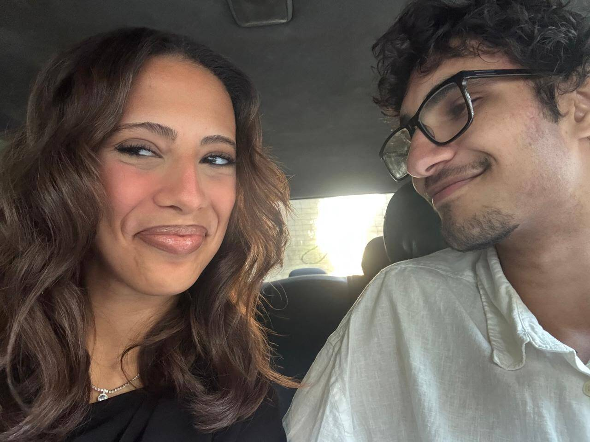
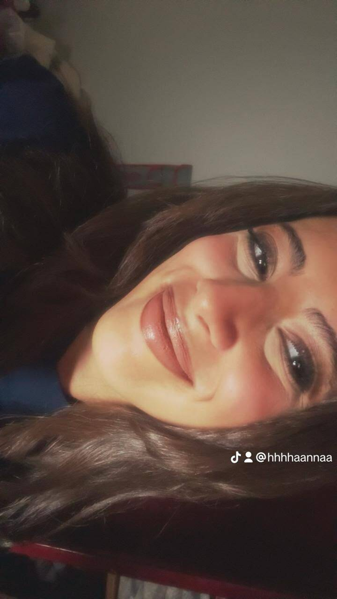

My dearest,
Before anything else, I want you to know that these words are not meant to decorate a feeling or make a moment sound larger than it is. They are simply an attempt to put into writing the things I have carried quietly: the love I feel, the ways I have fallen short, the gratitude I do not always express well, and the person I am trying to become because of what we have shared.
This is not a performance. It is a letter from me to you—honest, imperfect, and written with care.

Chapter One
The Beginning of You
my love, there are so many things i wish i could explain to you, and so many moments i wish i could go back to and handle differently, especially the moments when you needed kindness from me and instead received a version of me that was impatient, upset, distant, or simply not treating you the way you deserved. i am deeply sorry for every time my words made you feel hurt, every time my reactions made a simple situation harder than it needed to be, and every time i made you feel that you had to be careful with me instead of being able to speak freely and comfortably. you never deserved to feel that way with someone who claims to love you as deeply as i do. i keep thinking about how many times you must have gone to sleep with things on your mind, how many times you must have wondered why i was acting differently, and how many times you might have felt that you were trying to reach me but couldn’t quite get through. it hurts me to know that some of those feelings were caused by my own actions, especially because the last thing i have ever wanted is to make you feel unloved or unimportant. i know that there is much more to your experience than what i have seen or understood, and i don’t want to assume that i know exactly how every situation made you feel. i want to listen to you, understand the things that hurt you, and give your feelings the attention they should have always received. you don’t have to convince me that something hurt you, you don’t have to explain your sadness ten different ways for me to take it seriously, and you never have to make your feelings smaller just to make a conversation easier for me. i am sorry, my beautiful girl, for every moment in which i failed to give you the gentleness, patience, and consideration that should have come naturally from the person who loves you.
Chapter Two
What You Have Meant
i want to take a moment to appreciate you for the girl you have been throughout these four years, because sometimes i think about everything we have experienced together and realise that there is so much about your efforts that i should have acknowledged more often. i appreciate every time you tried to understand me, every time you gave me the chance to explain myself, every time you tried to communicate something that was bothering you, and every time you still made an effort to make things better even when you were already tired yourself. i appreciate the patience you have shown, the care you have given, the affection you have shared with me, and all the little things you have done that might have seemed ordinary to you but have always meant so much to me. i know that being with me has not always been easy, and i don’t want to pretend that the beautiful memories we have made somehow cancel out the difficult ones. both exist, and i want to acknowledge both honestly. you have spent so much time being my girlfriend, sharing your days with me, letting me into your thoughts, giving me a place in your life, and allowing me to experience so many parts of the beautiful person you are. i never want to become so used to having your love that i forget how special it is to receive it. i don’t want your kindness to become something i expect, your patience to become something i depend on without appreciating, or your efforts to become things i only notice when they are no longer there. you are a person with your own feelings, your own struggles, your own tired days, and your own need to be cared for, and i want to remember that every single day. you deserve to be appreciated not only when things are going well, but especially in the little moments when nobody is saying anything, when you are simply being yourself, and when all you need is to feel that the person beside you sees you and values everything you are. thank you for every bit of love you have given me, and i am so sorry for the times i did not return it with the same care.
Chapter Three
The Things I Regret
about what i told you two days ago, i want you to know that it took me a long time to admit the truth, not because i didn’t trust you or because i didn’t think you deserved to know, but because i was struggling with something i had allowed to become such a big part of my life that i didn’t know how to face it anymore. i have spent years fighting this addiction, sometimes trying to convince myself that i could handle it alone, sometimes trying to ignore how much it was affecting me, and sometimes allowing the shame and frustration i felt towards myself to affect the way i behaved with the people i loved. i know now that keeping it hidden did not make anything better. it only made me carry something i needed to confront, while leaving you confused about changes in my behaviour that you had every right to understand. i am sorry that you had to experience the effects of something you didn’t even know was happening. i am sorry for the times i was not emotionally present, for the times i seemed different, and for the times you might have blamed yourself or wondered whether you had done something wrong when the truth was that i had things within myself that i was refusing to face properly. but i don’t want you to think that i am telling you this to justify anything or to ask you to look past the things i have done. my struggles are mine to take responsibility for, and it is not your responsibility to carry them, fix them, or suffer because of them. i want to stop living with this addiction, not just because of the way it has affected our relationship, but because i want to have control over my own choices again, to feel present in my life, to respect myself, and to become a healthier person in the way i think and behave. i want to be able to look at myself honestly without hiding behind excuses or making promises that i don’t follow. i am grateful that i finally opened up to you, and i wish i had found the courage to do so sooner. you deserved honesty from me, and from now on, i want honesty to be something you experience consistently rather than something you have to discover after something goes wrong.

Chapter Four
What I Am Learning
i understand that hearing me say i am going to change might bring you mixed feelings, and i completely understand if you don’t know what to believe right now. after everything that has happened between us, i know that you might have heard promises before, and i know that the thought of going through the same things again might be exhausting. i don’t want to dismiss that fear, and i certainly don’t want to make you feel guilty for having doubts. you have every right to remember what happened, to need time, to ask questions, and to judge my actions by what you actually see rather than what i tell you today. i want to change the way i handle difficult moments, because i never want a situation like what happened when we were walking towards the car to become another moment in which you feel hurt by me. i know you were frightened by the bats, and i know i was frightened too, but being nervous did not give me the right to speak to you badly or make you feel rushed or uncomfortable. i should have been more patient, more gentle, and more aware of how you were feeling. i want to learn to pause before reacting, to control my tone, to communicate without hurting you, and to understand that being upset or scared does not give me permission to take those feelings out on you. and this goes beyond one incident. i want to work on my anger, my honesty, my habits, my reactions, and every part of myself that needs attention. i know that change will not always be easy, and i know there will be difficult days, but i don’t want difficulty to become an excuse to return to old behaviours. i am going to take actual steps to work through my addiction and the things contributing to my behaviour, including seeking proper support instead of expecting myself to solve everything through promises alone. i want to become more thoughtful in the way i speak, more careful with your feelings, and more consistent in the way i treat you. i don’t expect you to trust every word immediately, and i don’t expect one conversation to repair everything. i want to give you the time and space to see the difference for yourself, because you deserve a change that is real even when we disagree, even when we are tired, and even when things are not going exactly how i want them to.
Chapter Five
Still, With All of Me
and my love, there is something i really want you to understand about the place you have in my heart. i don’t think i could ever properly put into words how much i adore the person you are, how much i cherish the little details that make you you, and how grateful i am that i have been able to know you and love you through all these years. i love your heart, your mind, your personality, your way of seeing things, your little habits, your expressions, your smile, and all the things you might not even notice about yourself. i love the girl who gets excited about things, the girl who has so much on her mind, the girl who works hard, the girl who gets tired, the girl who has her own worries and still has so much love to give. i don’t want you to feel that you have to be happy all the time, that you have to be patient all the time, or that you have to hide the things that bother you to keep me comfortable. i want to know all the parts of you, including the difficult feelings, the days when you are not okay, the moments when you need reassurance, and the times when you simply want someone to listen without turning everything into an argument. i want to be a person you can share those things with comfortably. i want to care about the little details of your day, notice when something is bothering you, celebrate the things you are proud of, encourage you when you doubt yourself, and make sure you never feel that your feelings are an inconvenience to me. i want to love you in ways that you can actually feel, through my patience, my honesty, my actions, my attention, and the way i speak to you even when we disagree. i am asking you to forgive me, sincerely and with all the love i have for you, but i know that forgiveness cannot be demanded, rushed, or earned through one long message. you don’t owe me an immediate answer, and you don’t have to pretend that the hurt has disappeared. i just hope that, with time, you will be able to see that i meant every word i told you, not because i said it beautifully, but because i lived by it. i want to become a man who takes care of the heart of the girl he loves, who understands the value of the person beside him, and who never treats her love as something ordinary. you mean so much to me, my gorgeous girl, and i want to spend the days ahead showing you how precious you are to me, one honest action, one gentle moment, and one better choice at a time.
My Favourite Photograph
Yours, always
Abdallah